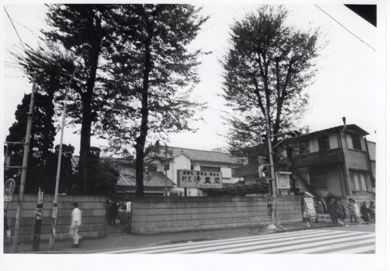
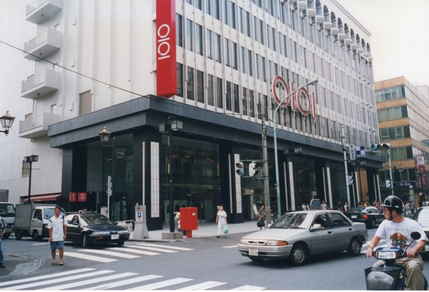
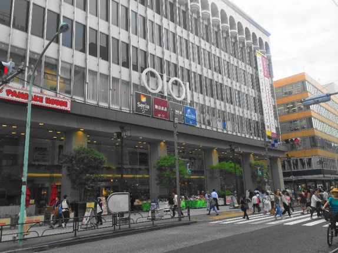

丸井吉祥寺店



これらの写真はいずれも、現在丸井吉祥寺店がある場所を写したものである。左の２枚は石川さんが撮影したもの、右の1枚は現在の写真だ。
左の写真に写っているのは「割烹 清鳳閣」で、昭和20年代前半に開業した。丸井吉祥寺店がこの場所に移ったのが1978（昭和53）年９月であるから、それ以前に撮影された写真である。清鳳閣は吉祥寺としては高級で規模の大きい料亭で、結婚式場や衣料品展示場としてよく利用されていたという。清鳳閣の経営者は1970年代に吉祥寺駅周辺の再開発が進む中で土地の高度利用に踏み切り、地上8階地下2階、延べ床面積2万5565㎡のビルを建設する構想をたてた。
この構想によって生まれたのが現在の丸井吉祥寺店である。 丸井はもともと今の場所よりも西側、現在ドン・キホーテがある場所に1960年に出店した。1970年代前半に伊勢丹や近鉄百貨店、東急百貨店などの大型店が駅北口に進出したのに対し、様々な対応策を検討する中で、清鳳閣跡地ビルへの移転を決定したのである。これにより、吉祥寺駅から丸井を経て井の頭公園へという大きな人の流れが形成された。
中央の写真右端にの右側に写っているさくら銀行は1992年から2001年に存在した。丸井のロゴデザインが今のデザインに変わったのは1993年であることから、この写真の撮影時期は1992年か1993年であると考えられる。撮影のアングルが左の写真と似ていることから、石川さんが左の写真と比較する意図をもって中央の写真を撮影した可能性もある。現在の場所に移って以来、丸井は今も吉祥寺駅南口の商業の核としての役割を果たしている。